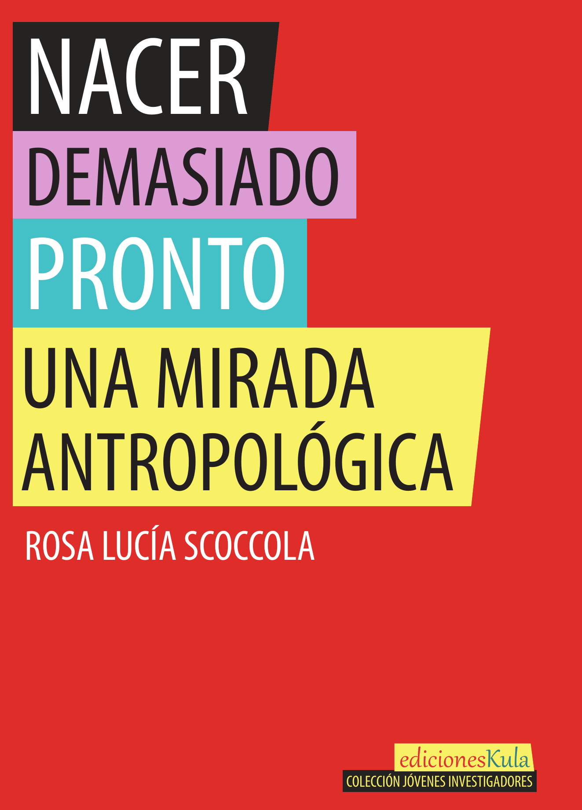
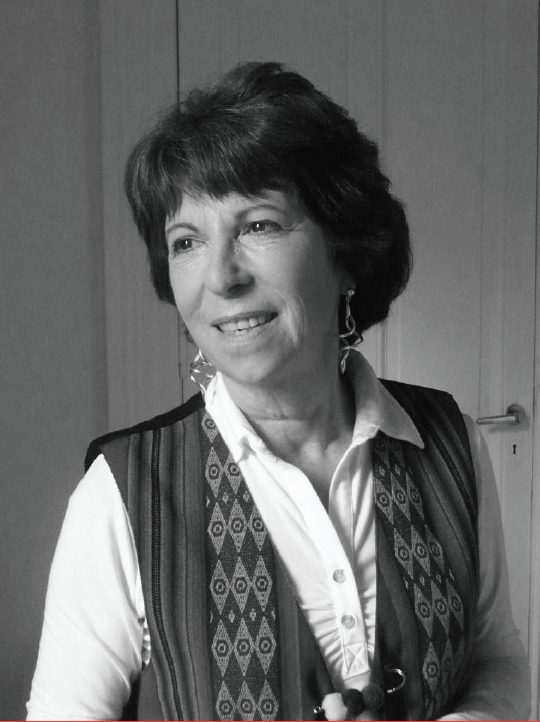

Leer el libro completo (PDF, 152 páginas, 5 MB)
Tapa completa, con solapas y contratapa (PDF, 2 MB)
Rosa Lucía Scoccola nos adentra en situaciones que van contra estereotipos sociales acerca de la maternidad, el parto o la paternidad. La experiencia médica y la reflexión antropológica se unen virtuosamente en este texto, que conmueve nuestra deficiente conciencia sobre la prematurez. Los datos fríos acerca de su alta incidencia en los índices de mortalidad infantil en Argentina toman carnadura existencial, sumergiéndonos en la perspectiva de los sujetos y las familias que la han vivido o la viven. La capacidad de la novel antropóloga de pensar desde otro lugar su práctica médica, desarrollada en el área materno-infantil de un hospital público tan importante como el Carlos Durand de la ciudad de Buenos Aires, nos conduce hacia las vivencias, las representaciones, los sentimientos sea de padres de bebés prematuros o aún de agentes de salud involucrados.
Con la autora, ya no podemos tomar como antes la información sanitaria ordinaria: datos estadísticos sobre morbimortalidad infantil, costos económicos o recursos técnicos y humanos que su atención exige. El texto de Scoccola nos permite oír la voz de esos padres a quienes sorprende la contingencia de un hijo recién nacido que debe permanecer internado en una unidad de terapia intensiva neonatal, de familias que deben convivir dilatadamente con médicos y otros agentes de salud, de madres cuya vida cotidiana pasa a desarrollarse por un tiempo en albergues especiales. También nos acerca el testimonio de cómo la prematurez suele constituirse en una marca de identidad que formará parte esencial de narrativas personales y familiares de quienes la han vivido. Representaciones y sentimientos que se constituirán en sello identitario de personas cuya fragilidad o fortaleza y capacidad de supervivencia no dejará de evaluarse a lo largo de toda la vida.
Al enfatizar su faceta de antropóloga, Rosa Lucía Scoccola, lejos de suspender, enriquece su faceta de médica. Seguramente un antropólogo que no fuese también médico sería incapaz de ver lo que el texto nos muestra a través de su reflexión. Por ello, tanto legos como agentes de salud especializados somos llamados a compartir una perspectiva más abarcativa sobre la problemática de la prematurez, la mirada que solo alguien singularmente situado como nuestra autora está en condiciones de desplegar sobre tal multiplicidad de aristas biosanitarias, socioculturales y existenciales.

Médica (Universidad de Buenos Aires), pediatra y neonatologa. Integró el equipo de Seguimiento de Recién Nacidos Prematuros del Hospital Carlos Durand, de la Ciudad Autónoma de Buenos Aires. Docente Universitaria en Medicina. Ha escrito numerosos trabajos de su especialidad médica y en cursos de antropología alimentaria. Licenciada en Ciencias Antropológicas en la Facultad de Filosofía y Letras de la Universidad de Buenos Aires. El texto del libro es la versión revisada y corregida de su tesis de grado en Antropología.
Contacto: scoccolarosana@gmail.com
“Nacer antes de tiempo” arroja luz sobre la tarea colectiva que, en el área de Neonatología, los agentes de salud y las familias alientan, en el proceso dramático, difícil, de reparar lo que la naturaleza no pudo cumplir: concretar a término la gestación de un niño. En la primera parte del trabajo aparece una rigurosa sistematización del contexto representado por la realidad sanitaria del país en la atención de la prematurez, en un balance sobre avances y logros, pero que reconoce lo que aún falta por recorrer. En el desarrollo que despliega, la autora queda incluida, en su carácter de médica de la especialidad, como una actora más. Desde ese posicionamiento nos transmite saberes y experiencias, al mismo tiempo que procura una mirada dirigida a indagar sobre el proceso complejo por el que atraviesan los niños y sus familias, el impacto del acontecimiento en el grupo y en la construcción identitaria del nacido prematuro. El enfoque intenta ir más allá de documentar prácticas reparatorias, tratamientos y secuelas; explorando en la variedad de significados que deberán procesar y elaborar los padres y hermanos en primer término y, paulatinamente, el protagonista del nacimiento anticipado.
The book sheds light on the collective tasks that, in the area of Neonatology, healthcare workers and families encourage, in the context of the difficult and dramatic process of reparing what nature could not fulfill: to carry out the pregnancy of a child to term. In the first part of the book, a rigorous systematization of the context represented by the country's health reality in the care of prematurity appears, in a balance on progress and achievements, but that recognizes what still remains to be done. In the development that unfolds, the author is included, in her capacity as a doctor of the specialty, as one more participant. From that position, she transmits knowledge and experiences to us, at the same time that she seeks a look aimed at investigating the complex process that children and their families go through, the impact of the event on the group and on the construction of the identity of the premature born. The approach attempts to go beyond documenting remedial practices, treatments, and sequelae; exploring the variety of meanings that parents and siblings must process and elaborate in the first place and, gradually, the protagonist of the anticipated birth.